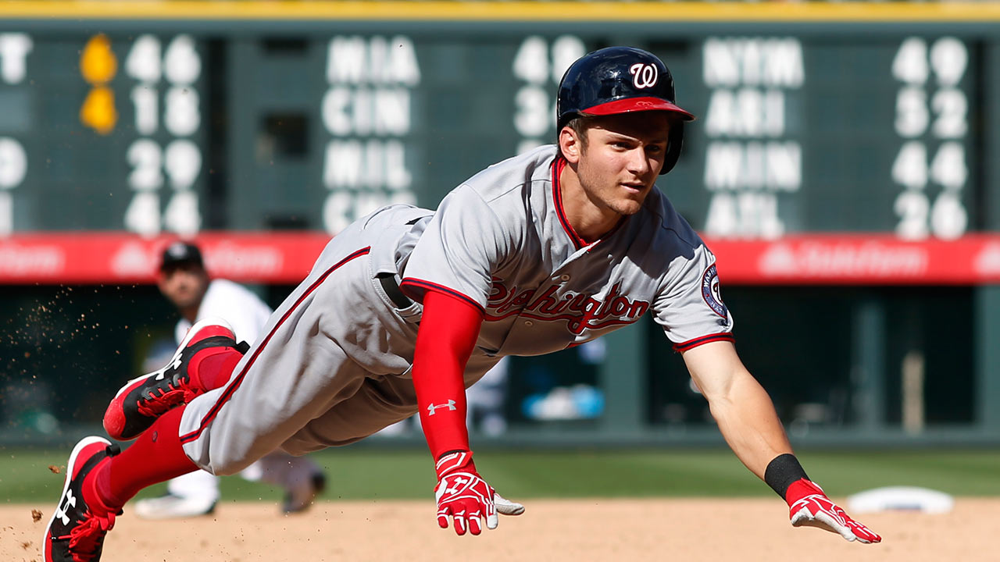

Nationals don't necessarily look eager to move past Dodgers for No. 1 seed
WASHINGTON -- The Washington Nationals looked a whole lot like a team that isn’t necessarily interested in overtaking the Los Angeles Dodgers for the top seed in the National League.
On Tuesday, the Nats appeared lifeless during an 8-0 whitewashing against the Atlanta Braves. Gio Gonzalez, who has pitched well enough to nudge himself into the Cy Young conversation, allowed more than four earned runs for just the third time this season. Speedster Trea Turner, whose 87 percent success rate on steals is among the league leaders, got picked off first base. Michael Taylor, who has quietly become one of the game’s better center fielders, had an uncharacteristically bumpy night in the field that included a throwing error and a route or two that could be described as less than optimal. And of course there was the whole zero runs thing, which was all the more surprising given that it came against starter Julio Teheran, whom Washington has hit hard historically.
Of course, it’s not like there weren’t excuses.
First and foremost, there’s the mental letdown of having already clinched, which the Nationals did on Sunday when they secured a postseason berth earlier than any team in the past 15 years. Then there’s the physical letdown. Even though Dusty Baker’s club had the good fortune of not playing on Monday following Sunday’s bottle-popping festivities, it looked as if they could have used another off-day ... or five. Not for nothing, they were also missing Bryce Harper, who has absolutely feasted on Teheran to the tune a .459 lifetime average, with seven home runs in 37 at-bats. Regardless of the reason, Washington looked flat-out flat.
“I just don’t think we played very well today,” catcher Matt Wieters said. "Everyone wanted to go out there, play hard and get a win. It’s just a hard game. We came out there and didn’t play well today.”
That hasn’t been Washington's norm lately. The Nats entered Tuesday having won 13 of their past 17 to move within 3½ games of the staggering Dodgers (who are 1-16 in their previous 17 entering Tuesday). With L.A. coming to D.C. this weekend for a three-game set, it’s entirely possible that by the time the Dodgers leave town, the Nats might have leapfrogged them in the standings for the NL’s No. 1 seed. Not that that’s necessarily a good thing.

As it stands now, if Washington winds up as the No. 2 seed, the Nationals would be looking at a division series matchup with the winner of a NL Central Division where the Chicago Cubs are currently on top with a .538 winning percentage -- the lowest of any division leader in baseball. If, however, the Nats end up scoring the top seed and face the winner of the wild-card game, there’s a good chance that their first-round opponent would be ... gulp ... the Arizona Diamondbacks.
If you’re just tuning in, the D-Backs are about as good as a wild-card team gets. They own baseball’s fifth-best record (83-61) and its sixth-highest run differential (plus-136). Their rotation boasts one of the game’s best one-two punches in righty Zack Greinke and lefty Robbie Ray. Their lineup, anchored by perennial MVP contender Paul Goldschmidt and buoyed by deadline acquisition J.D. Martinez, is potent. Their bullpen, which features filth-bringer Archie Bradley, ranks second in the NL in ERA. Perhaps most importantly, they’ve won 16 or their past 20 games and are hotter than any team not named the Cleveland Indians. All of which is to say that, home-field advantage or not, maybe the Nationals -- who are still seeking their first playoff series win since moving to the District in 2005 -- might be better served by holding on to that No. 2 seed. Not that they’re concerned with seeding right now.
“Doesn't matter,” Turner said prior to Tuesday’s game when asked about the possibility of prying the top seed away from L.A. “We had home-field advantage last year. Didn't matter. You're still going to have to win on the road. We've played good ball on the road. Wherever we have to play, you still have to win.”
Will Washington Nationals’ prospect Victor Robles be on the Nats’ postseason roster?
Washington’s top prospect, 20-year-old outfielder Victor Robles, got the call to come up to the majors in the aftermath of an update on injured outfielder Brian Goodwin, who had a setback which cast doubt as to whether the center fielder will be able to return to the Nationals this season. “This is definitely what I worked for,” Robles said, through an interpreter, after he got the call. “And I definitely was surprised to get called up so young at 20 years old, but I think I have the ability to help the team out and hopefully I’ll help them out any way I can with my ability.” Dusty Baker told reporters at the time that if Goodwin is in fact unavailable, and other reports have suggested he could, potentially, make it back, the Nationals would face a tough decision on could back Michael A. Taylor up in center field. “Do we need speed?” Baker asked rhetorically, as quoted by Washington Post writer Jorge Castillo. Baker told reporters that he would prefer to have “bonafide” outfielder on the roster behind Taylor for the postseason, when asked about possibly using Wilmer Difo in the outfield after some experiments with that this season. So who is it going to be? The likely options? Alejandro De Aza, Rafael Bautista, Andrew Stevenson, or Robles? The Nats’ skipper discussed the possibility of keeping Robles on the postseason roster, but wondered if it would be the right decision. “We got to see what we have,” Baker said. “I hear his youth is prone to mistakes, which you can’t make those mistakes in the postseason. It’s not fair to maybe put him in that situation.” While expressing reservations, Baker has also talked about the maturity he’s seen from Robles, who connected for his first hit in the majors during Sunday’s finale with the Philadelphia Phillies, lining what was ruled a double off the out-of-town scoreboard in right before he was thrown out trying to stretch it into a triple when he slid past and lost contact with the bag. Baker’s been impressed. “What I’ve seen from him -- I liked him in Spring Training,” Baker told MLB Network Radio hosts Casey Stern and Cliff Floyd on Monday afternoon. “I liked his calmness, plus I liked — he’s the kid of the lot, but he’s kind of the leader of the young Dominicans, which showed me a lot, showed me his maturity, showed me his intellect, for others to kind of look up to him, but he’s very humble in how he carries himself. Matter of fact, he had told one of the guys on the team that he wanted to hit a triple as his first hit, and that’s what he hit, and I was like, ‘Kid, what else can you predict?’ you know what I mean? “I’ve heard about his talent,” Baker continued, explaining that seeing Robles come up has brought him back to the start of his own playing days. “Like I was looking at him, I was like, man, I was a September call-up at 19, and I was just looking at him and just thinking about all the years that have transpired and wondering how his career is going to go. We’re not going to try to rush him, but we’re getting a good look at him. I’m going to get him in there when I can.” Baker said he’s explained the situation to Robles and all the young players who have been called up to the majors in the last few weeks. He’ll get them in when he can if they can help the team, but the Nationals want to keep winning down the stretch. “I tell all of them, I said, ‘Hey, I’ll get you in there,’ because we all remember what it was like to come up and every time the manager looks down the dugout, all the young heads pop out. “Those guys give us energy, and it’s nice to have those young players around.” Will Baker keep Robles around when it comes time to make decisions for the Nationals’ postseason roster? Veteran Washington Post columnist Thomas Boswell in his weekly, Q&A with readers, was asked what it would take for Robles to make the postseason roster? “It wouldn't take anything. I'd put him on the playoff roster as the 25th man if he just keeps playing the way he is so far. Goodwin is out. You'll need an OFer. “They put [Pedro] Severino on the post-season last year and he did fine. ([Wilmer] Difo, too.) Robles has a ton of poise. He roped a ball off the very top of the scoreboard in right-center on Sunday to drive in a run and he made it to third even though the ball bounced right back to a Phil. Most fast players don't even come close to a triple [off] that. But he slid a couple of inches PAST third and was called out -- so only a double. But one which showed his opposite-field power, his explosiveness and aggression. He also got hit by a pitch -- something that happens to him about 35 times per 600 AB. That's a long-term worry. But if he still looks like he's kept his timing, and Goodwin doesn't get back, I'd lean toward Robles on the roster. “Yes, he's only 20. One note: Taylor is playing so well in CF that I wouldn't even consider anybody else for that job in '18. I'd just give it to Taylor for '18-'19-'20 unless/until he plays himself out of it over a big data sample. “By '19, I suspect the [outfield] will be [Adam] Eaton LF, Taylor CF and Robles RF. Might be the best defensive OF you'd see in DC in a 50-[year] period. Kinda reminds me of speedsters Sam Rice and Goose Goslin in the same OF back in 1924. (Oh, sorry, momentary hallucination.)” Just ignore that last paragraph of the answer, which seems to suggest Boswell doesn’t expect Bryce Harper to still be with the Nationals after 2018. Harper is another one of the question marks for this year’s postseason roster, though he, GM Mike Rizzo, and Baker continue to say they expect the 24-year-old outfielder will make it back from his “significant” bone bruise and left ankle sprain for [late September and] October. Dusty Baker and the Nationals have a few weeks to sort things out and make some tough decisions in advance of the NLDS. But picking between bullpen options and a number of outfielders for the 25th man on the bench isn’t the worst position to be in.